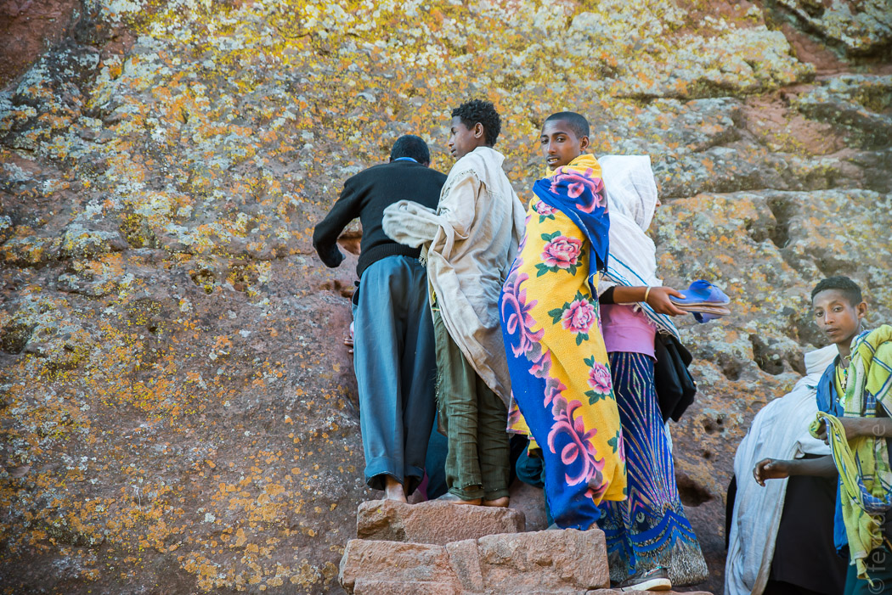

Keine Äthiopien-Reise ist vollständig ohne einen Besuch im Neuen Jerusalem: Lalibela. Obendrein wird hier das größte Weihnachtsfest des Landes gefeiert. Obwohl es bei unserer Planungsphase auf der Karte irgendwie "in der Nähe" von Mekele zu liegen schien, hat uns die Anreise einen ganzen Tag gekostet. Die Kakteenlandschaft Tigrays ist wieder den strohigen Hügeln Amharas gewichen. Ansonsten ist während der fast zwölfstündigen Fahrt nicht viel passiert.
Unser Hotel "Roha" liegt am südlichen Ende des Orts. Aber wir wissen die Abgeschiedenheit zu schätzen. Unser Fahrer hat drei Anläufe gebraucht, um von der verstopften Hauptstraße durch das noch viel verstopftere Kirchenviertel zu kommen. Das Hotel hat einen skurrilen 60er Charme mit viel Beton und Teppichen und dreieckiger Zimmergestaltung. Aber nach den entbehrungsreichen Tagen in der Danakil ist es traumhaft.
Unser Plan war in Lalibela die berühmten Felsenkirchen zu besuchen bevor am 7. Januar die Weihnachtsfeierlichkeiten beginnen und die Kirchen dann für touristische Zwecke nicht mehr zu gebrauchen sind. Das hat nicht ganz hingehauen. Die Stadt ist schon seit Tagen von zehntausenden Pilgern überfüllt, die auf dem Marktplatz und jedem freien Zentimeter zwischen den Kirchen kampieren. Den meisten reichen dafür die Decken, in die sie gehüllt sind, und ein kleines Bündel Habseligkeiten. An einem Hang wurden ein paar Gruben ausgehoben und Sichtschutze aufgestellt, ansonsten beschränkt sich die Morgentoilette der Pilger aufs Naseschnäuzen.
Mit Mühe haben wir in dem Wust aus Menschen, die zu jeder Tages- und Nachtzeit beten oder schlafen, das Ticket Office gefunden, wo wir den unglaublich überteuerten Eintrittspreis berappen. Das erwies sich noch als der leichteste Teil unserer Besichtigung. Die Kirchen waren schon randvoll mit Pilgern und lange Schlangen vor den Eingängen. Immerhin konnten wir häufig den Touristenbonus nutzen und wurden als weithin sichtbare Nicht-Pilger von den Ordnern vorgelassen. Sonst hätten wir an dem einen Tag kaum zwei Kirchen gesehen.
Der Legende nach hat König Lalibela im 12. Jahrhundert im Traum den göttlichen Auftrag bekommen ein neues Jerusalem zu bauen. Daraufhin hat er nicht den Arzt sondern seinen Architekten gerufen. Als König standen ihm nicht nur seine Untertanen als Arbeitskräfte zur Verfügung, nachts sollen Engel, die äthiopischen Heinzelmännchen, weiter gearbeitet haben. Die insgesamt elf Kirchen im Ort haben keinerlei Fernwirkung, denn sie wurden von oben nach unten in den Fels gehauen. Man findet sie kaum, wenn man davor steht. Nur an den großen, hässlichen Schutzdächern, die die UNESCO gebaut hat, kann man ihren Standort erahnen. (Wird sonst bei störender Nebenbebauung das Kulturerbe nicht gerne aberkannt?) Die meisten Kirchen haben einen rechteckigen Grundriss und wirken von innen relativ normal, wenn auch recht schmucklos. Man muss sich immer wieder vergegenwärtigen, dass die Säulen nicht gebaut wurden sondern übrig geblieben sind, so wie jedes architektonische Detail vom Kapitel bis zum Sims. Da werden Erinnerungen an Petra wach.
Für uns steht aber der wilde Ansturm der Pilger im Vordergrund. In den Kirchen, wenn man überhaupt hineinkommt, muss man seine Füße gut platzieren, denn überall sitzen weiß verhüllte Gestalten. Unter bunten Schirmen stehen Priester mit großen hölzernen Handkreuzen bereit gegen eine kleine Spende Segen zu spenden. Die Pilger berühren dazu das obere Ende des Kreuzes mit der Stirn und küssen das untere Ende, danach bekommen sie damit einen Klaps auf den Rücken. Ungeimpft ist das eine fragwürdige Vorgehensweise. Aber die Pilger drücken sich in endloser Schlange an den Segensstationen vorbei. In den kühlen Gebäuden steht der säuerliche Gestank von ungewaschenen Füßen und der buttrige Gestank ungewaschener Pilger.
Zu dieser besonderen Zeit laufen pausenlos Messen. Dann werden wir schnell aus der Kirche heraus gescheucht und müssen uns mit der Außenansicht zufrieden geben. Die ist in den meisten Fällen aber auch die schönere. Die Georgskirche ist besonders schön, da sie etwas abseits liegt und dem Schicksal eines Schutzdachs entgangen ist und mit ihrem kreuzförmigen Grundriss sonderbar fremd wirkt.
Um in die Kirchen zu gelangen, die um die 15m tief im Stein liegen, sind tiefe Gräben geschnitten worden. Die zwei großen Kirchenkomplexe sind mit labyrinthartigen Wegen und Tunneln durchzogen, die auf verschiedenen Ebenen miteinander verbunden sind. Von der Oberfläche aus sind wir über Treppen immer tiefer abgestiegen, bis wir in einem 40m langen Tunnel fest steckten, weil es vorne nicht weiter ging. Die mantrahaften Gebete und Gesänge sind stumpf durch die Wände gedrungen. Die Gläubigen fallen immer wieder in ein indianermäßiges Zungenträllern ein, das kreisförmig durch die Kirchen und Gänge hallt.
Völlig erledigt haben wir es am frühen Abend tatsächlich geschafft alle Kirchen zu besuchen. Nach einem Abendessen mit unserem Wanderführer aus den Simiens, den wir zufällig getroffen haben, sind wir für ein paar Stunden ins Bett gestiegen.
Kurz vor Mitternacht sind wir zum xten Mal die lange Straße zu den Kirchen hochmarschiert. In der Marienkirche, die heiligste in Lalibela, war die Weihnachtsmesse schon im Gange. Aber auf allen Ebenen, unten um die Kirche und oben auf den Felsen, war schon kein Durchkommen mehr. Mit viel Glück haben wir uns an der richtigen Tür angestellt, wo wir nach einer Weile als Touristen von den Wachsoldaten durchgelassen wurden. Plötzlich haben wir uns mitten drin wieder gefunden. Die prächtig geschmückten Kirchenväter haben im Hof ihre Throne aufgestellt und Messe gehalten. Es wurde viel gesungen und getrommelt. Die Diakone haben Tänze aufgeführt und zwischendurch wurde langatmig gepredigt, immer wieder beantwortet von begeistertem Jodeln. Für ungläubige Fremde kann das sehr schnell anstrengend werden. Nach zwei Stunden haben wir den Rückzug angetreten und uns im 45 Grad-Winkel die überfüllte Treppe hinausgeschoben ohne die Stufen zu berühren.